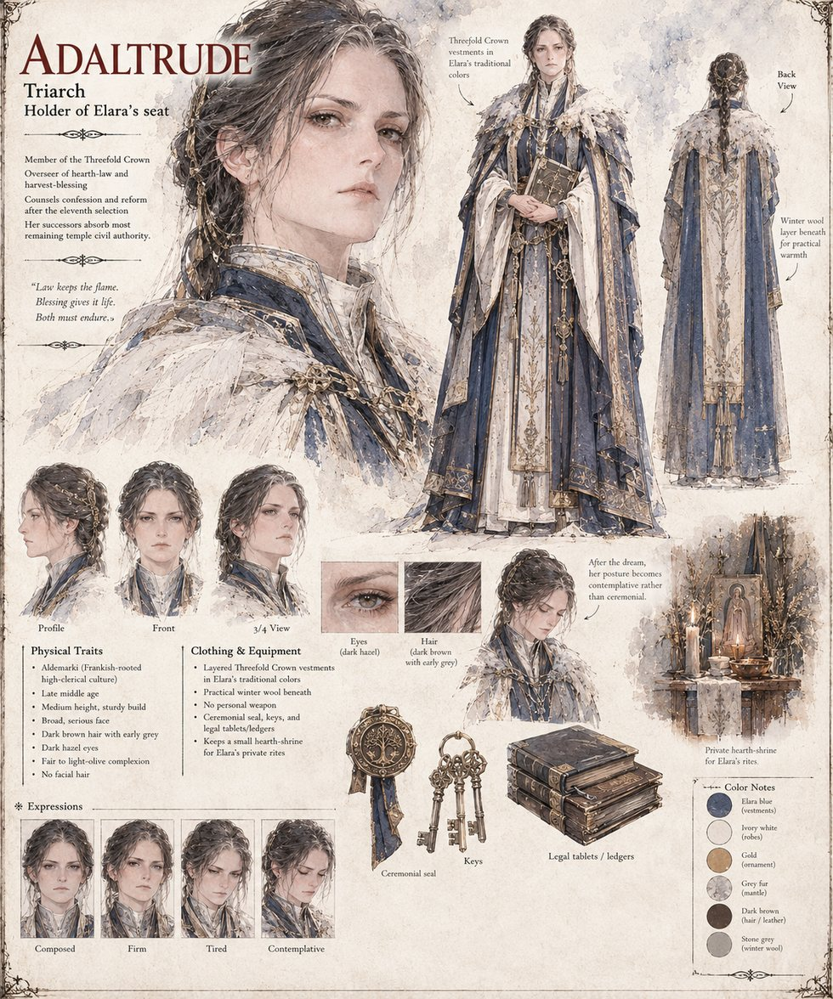

Adaltrude
Triarch of the Threefold Crown · holder of Elara's seat · overseer of hearth-law and harvest-blessing · late middle age by her sheet
Holder of Elara's seat on the Crown, twenty-six years into overseeing hearth-law, harvest-blessing and the quieter, less glamorous work of actually feeding a kingdom when the villages begin to refuse the tithe. In closed convocation she argues that a people cannot be starved into believing a lie they have personally watched be disproven, and that continued purges will produce exactly the outcome they are meant to prevent. Ansovald and Sigward outvote her two to one; the vote goes into no public ledger, and the famine that follows the next winter's grain shortfall does. The younger clergy who later ask, in careful language, whether a Crown that was wrong about the heavens can be trusted about anything it never troubled to reexamine are using the language she has modeled for them without ever quite instructing them to.
In the eleventh dream, at twenty-eight years in Elara's service, she rises as every dreamer before her has risen, expecting to feel accused and not: the globe does not know her office and the moon does not care what she has signed. What she takes from it is that the horror was never that Auron's account of creation was wrong but that the heavens do not care whether his priests got a word of it right. She wakes before dawn, goes alone to the small hearth-shrine she keeps for Elara's private rites and kneels there for most of an hour, not praying but sitting the way a woman sits with a debt she has just understood she cannot repay. She says only that she saw what the dead of nine villages saw, that it was as they described, and that a decade of burnings purchased nothing except the burnings; the manuscript calls it arithmetic, not confession. When the Crown splits three ways she counsels confession and reform, and Elara's seat, under her and her successors, absorbs most of what remains of the temple's civil authority. Among those successors, for six further generations, it is a quiet, unwritten custom to review, before confirming any sentence of exile or execution, whether the accused had asked a question the court found it easier to punish than to answer.
The sheet draws her in late middle age, of medium height and sturdy build, with a broad, serious face, dark brown hair with early grey braided and pinned with gold, dark hazel eyes and a fair to light-olive complexion, in layered blue-and-ivory Crown vestments with a grey fur mantle over practical winter wool, carrying a ceremonial seal, keys and legal tablets; one study shows her contemplative after the dream. The sheet calls the blue “Elara's traditional colors” while Elara's own sheet is red and cream, and both are given here as drawn. The pull-quote below is the sheet's own and does not appear in the manuscript.
“Law keeps the flame. Blessing gives it life. Both must endure.”